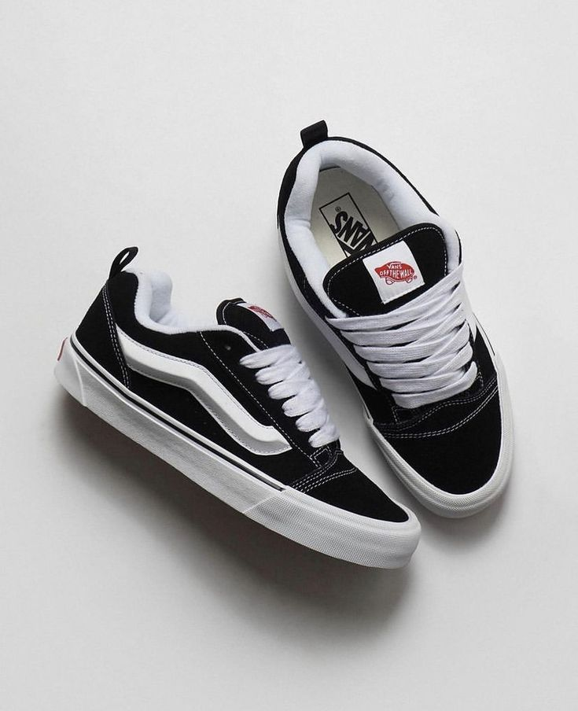
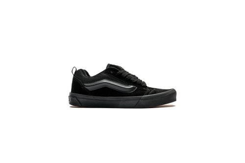

La Knu Skool es un modelo reeditado de los años 90, cuando las zapatillas de skate eran extra hinchadas. Confeccionadas con parte superior de ante y lienzo, este modelo de perfil bajo presenta una gran lengüeta hinchada y un cuello en el tobillo, lo que le da un aspecto exagerado que juega con la Old Skool original.
Manteniendo la estética "Off The Wall", nuestro icónico Vans Sidestripe ™ se ha rediseñado como un molde 3D de diamante hinchado, que se suma a la apariencia y sensación general gruesa. La adición de tiradores en el talón ofrece un fácil acceso para entrar y salir. Contiene tiradores en el talón para facilitar la calzada y suela waffle de goma distintiva.
